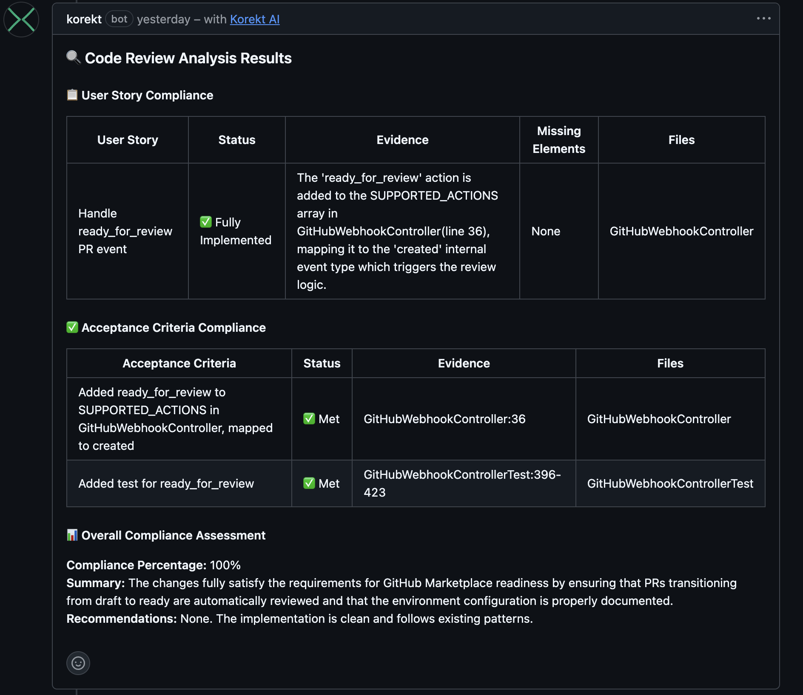
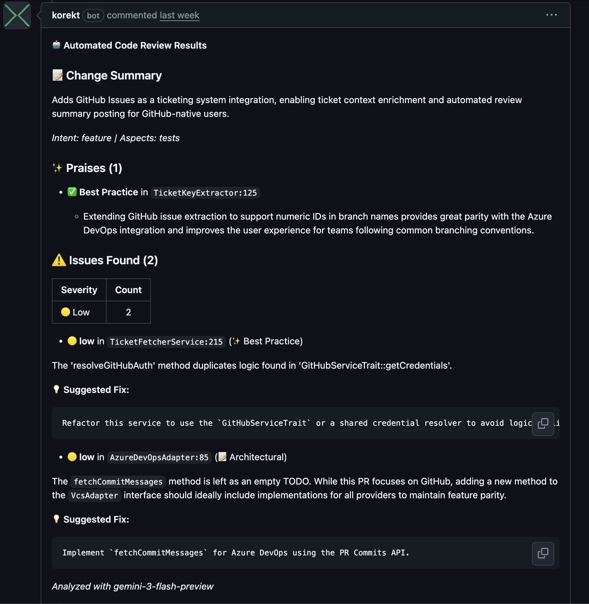

Korekt AI for GitHub
Automated code review and ticket compliance on every pull request
Install from GitHub MarketplaceOverview
Korekt AI for GitHub is a GitHub App that automatically reviews every pull request. When a PR is created or updated, the app analyzes the code changes and posts findings directly on the pull request — inline comments on specific lines, a summary comment with severity breakdown, and a commit status for merge gating.
If you have linked tickets, the review verifies that the code changes satisfy the requirements — checking each user story and acceptance criterion with per-requirement compliance status. Ticket compliance works with GitHub Issues out of the box, and also with Jira Cloud and Azure Boards if connected.
Screenshots
Ticket compliance — user story and acceptance criteria verification posted directly on the pull request. Click to enlarge.

Code review comment — change summary, praises, issues with severity ratings, and suggested fixes. Click to enlarge.

How It Works
- PR created or updated — The app receives a webhook when a pull request is opened or new commits are pushed
- Code analysis — The app fetches the PR diff and file contents, then sends them to the Korekt AI backend for analysis powered by Google Gemini
- Review posted — Results are posted back as a summary comment and inline comments on specific lines where issues were found
- Commit status — A pass/fail status is set on the PR, allowing you to optionally block merges when critical issues are found
Reviews are fully automated — no manual action is needed after installation. The app skips duplicate reviews if the same commit has already been analyzed.
Ticket Compliance
Korekt AI checks whether the code changes actually satisfy the ticket requirements. This works with multiple ticketing systems:
- GitHub Issues — Zero configuration. Reference an issue number in your branch name (e.g.,
feature/123-add-login) or commit messages (e.g.,Fixes #123) and the review automatically checks compliance against the issue description - Jira Cloud — Connect your Jira site in the Korekt dashboard. Use Jira issue keys in branch names or commit messages (e.g.,
feature/PROJ-123-add-loginorFixes PROJ-123) - Azure Boards — Connect your Azure DevOps organization in the Korekt dashboard. Use work item IDs in branch names (e.g.,
feature/AB#12345-add-loginorfeature/12345-add-login)
Each user story and acceptance criterion is individually verified, with evidence linking back to specific files and lines in the code.
Key Features
- Ticket compliance — Verifies code against user stories and acceptance criteria from linked tickets, with per-requirement compliance status
- Automated PR review — Every pull request is reviewed automatically on creation and update
- Inline comments — Issues posted on the exact lines where they were found, with suggested fixes
- Severity ratings — Each issue rated as critical, high, medium, or low across 9 categories
- Commit status — Pass/fail status on the PR for merge gating
- Custom rules — Define organization-specific review rules with severity, category, and examples
- Duplicate prevention — The same commit is not reviewed twice
Installation
- Install Korekt AI from GitHub Apps
- Select the repositories you want to review
- A free trial account with a $5 review budget is automatically created for your organization
That's it — no PAT or API keys needed. The GitHub App uses native OAuth with short-lived installation tokens. The app will start reviewing pull requests immediately. Your code is never used for model training.
Testing
To verify the app is working after installation:
- Create a new pull request in any connected repository (or push a new commit to an existing PR)
- Wait for the review to complete (typically 30–60 seconds depending on the size of the changes)
- Check the pull request for a summary comment from Korekt AI and inline comments on specific lines
- Check the commit status — you should see a "Korekt AI" status on the PR
Privacy & Security
The GitHub App uses short-lived installation tokens (60-minute expiry) with minimal required permissions. No long-lived credentials are stored.
Code is sent to Google Gemini for analysis and is not retained or used for model training. Review results are stored in your Korekt account for the configured retention period.
For full details, see our Privacy Policy and Security Policy.
Support
For questions, issues, or feature requests:
Email: support@korekt.ai
Security: security@korekt.ai